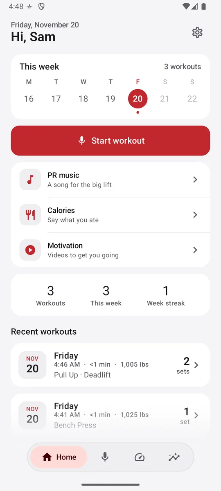
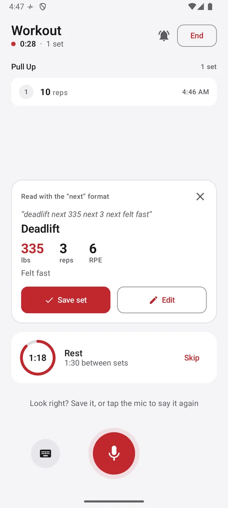
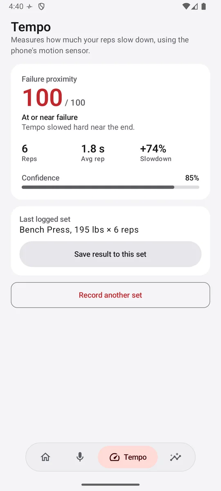
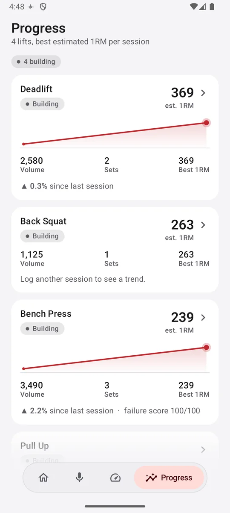
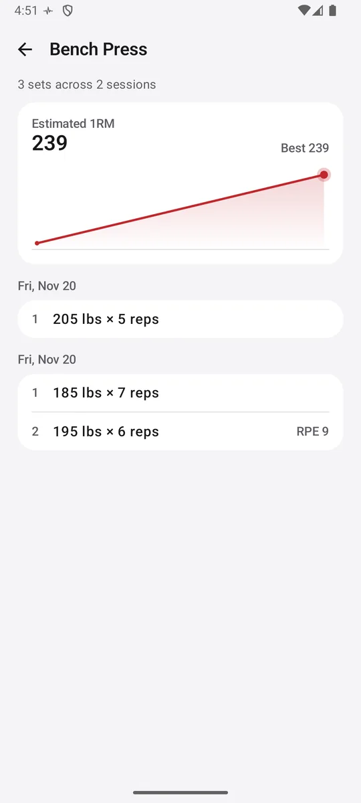
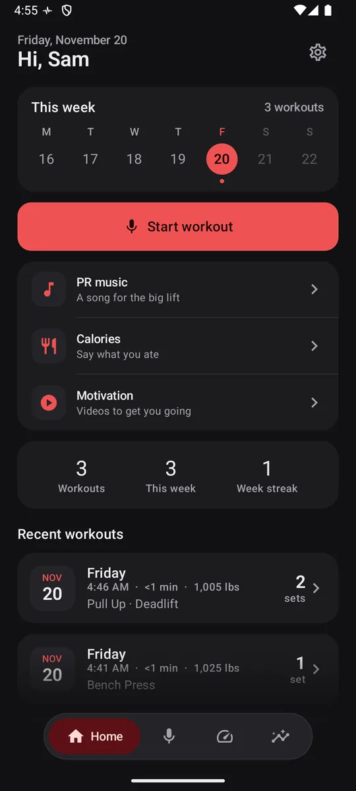

Android training app · Kotlin and Jetpack Compose
Log a set by saying it. Know how close it came to failure.
You can't type with chalk on your hands, and "how hard was that set" is a number people guess at badly. Redline turns speech into structured sets and measures rep tempo with the phone's motion sensor. Everything runs on the phone, with no account.



Voice logging
Three ways to read a set, and it works offline
Android's on-device recogniser turns speech into text. Then each parser gets a turn, in order, and has to clear a confidence bar. The language model sits in the middle, so it helps with messy speech without the app depending on it.
Spoken separators on-device
bench next 185 next 8 next smooth
Your own LLM endpoint optional
uh, did the incline dumbbells, sixty fives, ten of them
Freeform patterns on-device
bench 185 for 8, that was a grind
Tempo
Measured off the accelerometer, not self-reported
Reps slow down as you approach failure. Redline records the phone's motion through a set, finds each rep, and compares how long the early reps took with the late ones.
- Smooth the motion signal, so noise doesn't count as extra reps.
- Set the threshold from the set itself, so a light warm-up and a heavy grind are both read correctly.
- Pick peaks at least 450 ms apart, and drop gaps under 0.35 s or over 8 s as noise or rack time.
- Score failure proximity from the slowdown, with a confidence that grows with clean reps.
- Say why when it can't score: not enough movement, too subtle, or inconsistent timing. It never shows a plausible-looking guess.
Progress
Every lift on one row, however you said it
"Incline dumbbell press", "incline DB press" and "incline press" all count as one lift. Each lift gets an estimated-1RM trend and a status, and lifts that have stalled come first. Bodyweight lifts like pull-ups are tracked by reps.



Engineering
Built the way a production app would be
Clean MVVM with Hilt, a Room database behind one repository, and StateFlow throughout. The parsing and tempo code has no Android dependencies, so it is tested directly.
JVM unit tests covering the parsers, tier order, tempo maths, progress trends and formatting.
WCAG contrast for every text pairing in both themes, checked by a unit test rather than by eye.
Accounts or servers needed. Audio never leaves the phone; a transcript only does if you set up an endpoint.
- Kotlin
- Jetpack Compose
- Material 3
- Hilt + KSP
- Room
- Navigation-Compose
- Coroutines + Flow
- SpeechRecognizer
- SensorManager
Honest state
Version 0.1
- It's not on Google Play yet. Build it from source with Android Studio or
./gradlew installDebug. - Tempo scoring is unit-tested, but it hasn't yet been calibrated against real sets with the phone in a pocket or armband.
- The screenshots come from an Android emulator, with a demo hook feeding in the voice and sensor input.